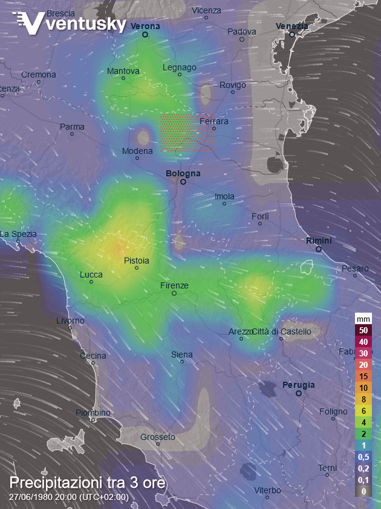
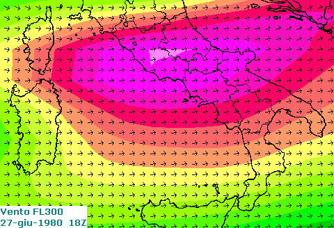

Fasi del volo - Condizioni meteorologiche
INDICE
Meteo alla partenza
In base ai METAR presenti nell'archivio di Weather Spark, nel corso del pomeriggio del 27 giugno 1980 si sono alternati temporali a parziali schiarite.
Il personale di rampa riferisce all'A.G. che intorno alle 19:45B (circa un quarto d'ora prima della partenza dell'IH870) erano presenti condizioni meteo avverse (temporale con forte pioggia, v. "WP001294_001.DOC"
fonte), ma ciò non trova riscontro nei tre METAR delle 19:20B, 19:50B e 20:00B, che riportano soltanto un cielo parzialmente nuvoloso, senza alcuna precipitazione.
L'assenza di precipitazioni è confermata anche dalle osservazioni meteo fonte dell'Aeronautica Militare, che presso l'aeroporto di Bologna forniva il servizio S2-A1 (osservazioni sinottiche triorarie dalle 03:00 alle 18:00 e osservazioni aeronautiche ogni 30 minuti nell'intero arco delle 24 ore):
27 PRECIPITAZIONI: 0000/0030 PIOGGIA DEBOLE INTERMITTENTE; 0030/0100 TEMPORALE
DEBOLE CON PIOGGIA(MM.02.8)= 1330/1455 TEMPORALE DEBOLE CON PIOGGIA; 1455/1500
PIOGGIA DEBOLE INTERMITTENTE(MM.01.2)= 1520/1555 TEMPORALE MODERATO CON PIOGGIA;
1555/1630 TEMPORALE DEBOLE CON PIOGGIA(MM.08.2)= 1822/1836 TEMPORALE MODERATO
CON PIOGGIA(MM.01.0)= TOTALE MM.13.2=
ALTRI FENOMENI:0100/0200 TEMPORALE SENZA PRECIPITAZIONI= 1330/1520 TEMPORALE
SENZA PRECIPITAZIONI= 1510/1520 TEMPORALE SENZA PRECIPITAZIONI
PERIODO RR,R ORA d' d' f' f'
x x x x
00-06 02.8 00,34 24,10
06-12 09,44 30,13
12-18 09,4 15,29 02,30
18-24 01.0 18,00 20,23
SPESSORE DELLA NEVE: CM 000 ; DURATA INSOLAZIONE (SS S) 04 1
NEBBIA O FOSCHIA:
La seguente tabella riepiloga i fenomeni meteo:
| Orario (UTC) | Fenomeno |
| 00:00 ÷ 00:30 | Pioggia debole intermittente |
| 00:30 ÷ 01:00 | Temporale con pioggia debole (2,8 mm) |
| 01:00 ÷ 02:00 | Temporale senza precipitazioni |
| 13:30 ÷ 14:55 | Temporale con pioggia debole |
| 14:55 ÷ 15:00 | Pioggia debole intermittente (1,2 mm) |
| 15:10 ÷ 15:20 | Temporale senza precipitazioni |
| 15:20 ÷ 15:55 | Temporale con pioggia moderata |
| 15:55 ÷ 16:30 | Temporale con pioggia debole (8,2 mm) |
| 18:02 ÷ 18:08 | Rullaggio e decollo IH870 |
| 18:22 ÷ 18:36 | Temporale con pioggia moderata (1 mm) |
La classificazione della pioggia in debole o moderata viene fatta in base alle RIT.
L'ICAO specifica che la pioggia è debole se l'intensità è inferiore a 2,5 mm/h, mentre è moderata fino a 10 mm/h (un'intensità maggiore dà luogo a pioggia forte).
Significativo è anche il dato dell'insolazione pari a 4,1 ore (4h6m) su 15,3 ore (15h21m) in cui il sole si è trovato quel giorno sopra l'orizzonte, indice del fatto che il cielo è stato coperto per gran parte del giorno.
Il rapporto indica, inoltre, che la velocità massima del vento alle 18:00 (qualche minuto prima del decollo dell'IH870) era 23 kn e che in quel momento il vento soffiava da 200° (sud-sud-ovest).

La
cartina riporta l'accumulo di pioggia nelle ultime 3 ore, cioè dalle 17:00B alle 20:00B (il titolo "Precipitazioni tra 3 ore" è una traduzione fuorviante).
Anche in questo caso è evidente lo scarso accumulo di pioggia fino a tre ore prima della partenza, tanto che ingrandendo la zona in cui si trova l'aeroporto Marconi (dopo aver cliccato sulla cartina o nel link precedente), le precipitazioni risultano totalmente assenti.
La cartina riporta una zona temporalesca a nord di Bologna, come indicato dai puntini tra Ferrara e Modena.
Il decollo avviene con un moderato vento al traverso (il METAR riporta per le 20:00B 18 kn da 200°).
Meteo in rotta
In questo paragrafo vengono presentati vari grafici e cartine che mostrano il valore di alcuni parametri meteorologici lungo la rotta del volo IH870.
Tali parametri sono stati ricavati in modo semi-empirico dai radiosondaggi relativi ad alcune stazioni meteo opportunamente elaborati tramite interpolazione/estrapolazione. La posizione del DC-9 usata per effettuare i calcoli (livello di volo, latitudine e longitudine) è stata ricavata dall'estrattore 3 del radar Marconi (tabulati di Ciampino).
Il primo grafico mostra il livello di volo espresso in piedi (che in questo caso è più corretto chiamare altitudine di pressione) ed è quello ricavato direttamente dai tabulati radar di Ciampino, l'altitudine dell'aereo sul livello del mare, la temperatura e l'umidità relativa.
La differenza tra l'altitudine di pressione e l'altitudine sul livello del mare è spiegata nella pagina "Altri termini → Livello di volo". Zoomando sulle due fasi di volo livellato, è possibile apprezzare la salita dell'aereo mentre l'autopilota mantiene costante il livello di volo. La crociera iniziale a FL290 comincia con l'aereo ad un'altitudine sul livello del mare pari a circa 29430 ft e termina ad un'altitudine di 29740 ft (l'aereo sale meno di 100 m in un quarto d'ora).
L'umidità relativa e la temperatura sono utili per valutare la possibilità di generare la scia di condensazione, argomento trattato nella pagina "Stato delle radioassistenze → Incrocio con altri aerei".
Questo secondo grafico mostra il livello di volo (propriamente detto, cioè l'altitudine di pressione diviso 100), la direzione da cui soffia il vento (270 significa che il vento soffia da ovest verso est, mentre 180 soffia da sud verso nord) e la velocità del vento. Cliccando sulla voce "Livello di volo" della legenda (a destra del grafico), il grafico mostrerà soltanto la direzione e la velocità del vento.

La cartina mostra il vento per la superficie di 300 hPa (corrispondente al livello di volo 300 circa) ed è utile per valutare l'attendibilità del grafico precedente.
Quella sorta di triangolo viola chiaro all'altezza di Roma rappresenta una velocità di circa 125 kn ed è la velocità massima del vento mostrato nella cartina. Il colore viola circostante rappresenta una velocità pari a circa 120 kn. Scendendo verso sud, la velocità si riduce molto regolarmente fino a circa 90/95 kn della fascia gialla.
La traccia verde del grafico, quindi, risulta coerente con quanto mostrato dalla cartina meteo dell'epoca, in quanto il DC-9 si trova nel punto in cui il vento ha un picco alle 18:40:09, circa 15 nm a nord di Fiumicino, proprio nella zona del triangolino viola chiaro. Andando verso sud, la velocità mostrata dal grafico si riduce coerentemente a quanto mostrato dalla cartina. La riduzione di velocità è più consistente quando l'aereo scende di quota.
Appurata la coerenza qualitativa del grafico, passiamo alla coerenza quantitativa della velocità del vento mostrata dal grafico.
I radiosondaggi per Fiumicino dànno per la superficie di 300 hPa 120 kn alle ore 12 del 27 giugno e 114 kn per le ore 0 del 28. Considerando che la cartina mostra per quella zona una velocità di 120/125 kn per le ore 18, la velocità di 116 kn mostrata dal grafico per le 18:40, quando l'aereo è all'altezza di Roma, risulta verosimile.
A completamento del quadro meteo di quella sera, è utile riportare la testimonianza del teste Tacchio Nicola (comandante, all'epoca dei fatti, del 4° Stormo a Grosseto).
Egli riferisce che il 27 giugno 1980 si è recato a Gioia del Colle insieme al Capo di Stato Maggiore della 2a Regione Aerea a bordo di un aereo da collegamento Aermacchi MB-326 (v. fondo pag. 209 della trascrizione, pag. 210 del PDF).
Durante il viaggio di ritorno, alle "diciassette e qualcosa", all'altezza del Terminale Sud Roma (lo spazio aereo più a sud in cui Roma fornisce il servizio di controllo radar del traffico), il teste riferisce che stavano già ascoltando Roma radar che emanava SIGMET relativi alla presenza di una corrente a getto (ben visibile nella cartina di cui sopra).
Egli dichiara (v. pag. 212):
A dire la verità questa noi l’avevamo già avvertita [la corrente a getto, ndr] perché eravamo a ventiduemila piedi e l’aereo vibrava a tal punto che abbiamo dovuto tirare giù i due seggiolini perché col casco si batteva sul tettuccio dell’aeroplano e siccome erano fortissime queste vibrazioni, tant’è vero che dico sinceramente avevo impressione che l’MB era... non era poi un velivolo nuovo, insomma era abbastanza vecchiotto, temevamo che si rompesse pure, e chiedemmo a Roma radar di cambiare la quota e di cambiare anche direzione e Roma radar ci ha fatto scendere a diecimila piedi e un po’ accostando verso l’interno dell’Italia girando chiaramente la zona del terminal di Roma e dirigendo verso Grosseto.
Insomma, contrariamente a quanto indicato in alcuni documenti processuali, in cui si parla di SIGMET relativi a forte turbolenza, poi, però smentiti dai fatti, il teste Tacchio Nicola conferma pienamente la fortissima turbolenza presente.
Ma al di là della testimonianza (che comunque va presa per buona fino a prova contraria), quel tipo di turbolenza, chiamata CAT, è un fenomeno normalissimo sistematicamente presente in determinate zone di una corrente a getto (come quella presente la sera dei fatti). Si veda, ad esempio: Corrente a getto → Influenze meteorologiche e climatiche.
Ciò che è stato verbalizzato in alcuni documenti processuali denota, purtroppo, una certa superficialità nel trarre alcune conclusioni: "a) le condizioni erano tali da non creare problemi alla condotta del volo. La forte turbolenza in aria chiara segnalata dai SIGMET, non ha trovato riscontro né nelle comunicazioni TBT del volo IH870, né nello sviluppo degli AIDS dei voli che lo hanno immediatamente preceduto e seguito.", si veda "TITOLO 3 - Le perizie", a pag. 38.
Il fatto che l'IH870 non abbia mai comunicato ai controllori la presenza di CAT non prova assolutamente niente, principalmente perché sarebbe del tutto superfluo comunicare la presenza di CAT ad un controllore appartenente allo stesso ente che emette un SIGMET di CAT; è ovvio che il controllore sa benissimo che la CAT è presente, non c'è alcun motivo per comunicarglielo.
È, invece, molto significativo in tal senso il fatto che l'IH870 richiede l'autorizzazione a scendere con larghissimo anticipo rispetto alla reale necessità d'iniziare la discesa per l'avvicinamento a Palermo: "20.46.31 =IH870= E' LA 870, E' POSSIBILE AVERE UN 250 DI LIVELLO?" (l'IH870, che si trovava al livello 290, chiede di scendere di 4000 ft).
Il fatto che la richiesta di scendere è stata fatta al controllore con larghissimo anticipo trova conferma nell'orario in cui il controllore di Roma dà l'autorizzazione a scendere: "21.04.28 = ROMA= IH870 QUANDO PRONTI AUTORIZZATI A 110, UNO UNO ZERO, RICHIAMATE LASCIANDO 250 E ATTRAVERSANDO 150", quasi 20 minuti dopo della richiesta del comandante Gatti. Considerando i 3 o 4 minuti che l'aereo avrebbe impiegato per scendere dal 290 al 250 alla normale velocità verticale di discesa (1000 / 1500 ft/min), l'IH870 avrebbe potuto mantenere il livello 290 ancora per un quarto d'ora circa.
Nessun pilota richiederebbe mai d'iniziare la discesa con tutto quell'anticipo senza avere un validissimo motivo per farlo. E il validissimo motivo, in quel caso, poteva solo essere la presenza di CAT, non necessariamente forte, ma che sicuramente era almeno fastidiosa. Non c'erano temporali, non c'erano cumulinembi da evitare, non c'era assolutamente niente che potesse indurre il comandante a richiedere una quota inferiore, all'infuori della turbolenza.
Ovviamente la presenza di turbolenza, per quanto forte avesse potuto essere, non implica in alcun modo che la struttura del DC-9 possa essere stata indebolita da questo fenomeno atmosferico; è fuori di dubbio.
In conclusione, quindi, è bene precisare che lo scopo di quest'ultima parte della pagina relativa al quadro meteo è unicamente quello di chiarire la situazione meteo presente quella sera nella sua interezza, evitando di prendere per buone superficiali conclusioni che non hanno fondamento, quale che ne sia la fonte.